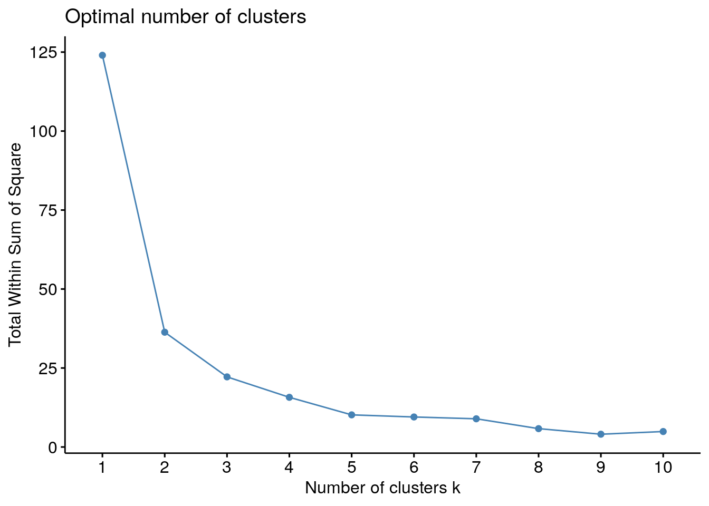
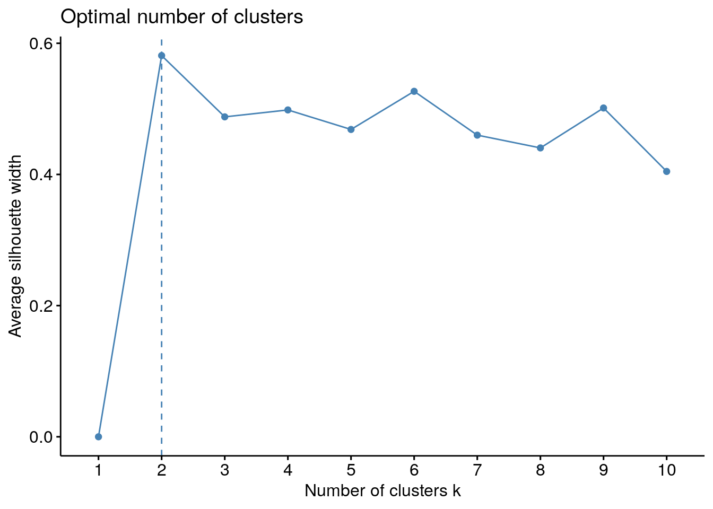

Code
library(dplyr) # data manipulation
library(tidyr) # data manipulation
library(factoextra) # clustering
library(caret) # data rescalingMenggunakan R
Saya akan gunakan data mtcars yang ada secara default di R.
library(dplyr) # data manipulation
library(tidyr) # data manipulation
library(factoextra) # clustering
library(caret) # data rescalingTidak semua variabel di mtcars akan digunakan.
data = mtcars %>% select(mpg,cyl,disp,hp)
row.names(data) = NULL
data mpg cyl disp hp
1 21.0 6 160.0 110
2 21.0 6 160.0 110
3 22.8 4 108.0 93
4 21.4 6 258.0 110
5 18.7 8 360.0 175
6 18.1 6 225.0 105
7 14.3 8 360.0 245
8 24.4 4 146.7 62
9 22.8 4 140.8 95
10 19.2 6 167.6 123
11 17.8 6 167.6 123
12 16.4 8 275.8 180
13 17.3 8 275.8 180
14 15.2 8 275.8 180
15 10.4 8 472.0 205
16 10.4 8 460.0 215
17 14.7 8 440.0 230
18 32.4 4 78.7 66
19 30.4 4 75.7 52
20 33.9 4 71.1 65
21 21.5 4 120.1 97
22 15.5 8 318.0 150
23 15.2 8 304.0 150
24 13.3 8 350.0 245
25 19.2 8 400.0 175
26 27.3 4 79.0 66
27 26.0 4 120.3 91
28 30.4 4 95.1 113
29 15.8 8 351.0 264
30 19.7 6 145.0 175
31 15.0 8 301.0 335
32 21.4 4 121.0 109# kita pakai bantuan dari library caret
preProcess_range_model = preProcess(data, method='scale')
data = predict(preProcess_range_model, newdata = data)
# hasil rescaling
data mpg cyl disp hp
1 3.484351 3.35961 1.2909608 1.6043669
2 3.484351 3.35961 1.2909608 1.6043669
3 3.783009 2.23974 0.8713986 1.3564193
4 3.550719 3.35961 2.0816744 1.6043669
5 3.102731 4.47948 2.9046619 2.5524020
6 3.003178 3.35961 1.8154137 1.5314412
7 2.372677 4.47948 2.9046619 3.5733627
8 4.048484 2.23974 1.1836497 0.9042796
9 3.783009 2.23974 1.1360455 1.3855896
10 3.185692 3.35961 1.3522815 1.7939739
11 2.953402 3.35961 1.3522815 1.7939739
12 2.721112 4.47948 2.2252937 2.6253277
13 2.870441 4.47948 2.2252937 2.6253277
14 2.522006 4.47948 2.2252937 2.6253277
15 1.725583 4.47948 3.8083345 2.9899566
16 1.725583 4.47948 3.7115124 3.1358081
17 2.439045 4.47948 3.5501423 3.3545854
18 5.375855 2.23974 0.6349914 0.9626202
19 5.044012 2.23974 0.6107858 0.7584280
20 5.624737 2.23974 0.5736707 0.9480350
21 3.567311 2.23974 0.9690275 1.4147599
22 2.571783 4.47948 2.5657847 2.1877731
23 2.522006 4.47948 2.4528256 2.1877731
24 2.206755 4.47948 2.8239768 3.5733627
25 3.185692 4.47948 3.2274021 2.5524020
26 4.529656 2.23974 0.6374119 0.9626202
27 4.313958 2.23974 0.9706412 1.3272490
28 5.044012 2.23974 0.7673148 1.6481224
29 2.621559 4.47948 2.8320453 3.8504807
30 3.268653 3.35961 1.1699333 2.5524020
31 2.488822 4.47948 2.4286201 4.8860266
32 3.550719 2.23974 0.9762891 1.5897818elbow = fviz_nbclust(data, kmeans, method = "wss")
plot(elbow)
Dari elbow secara visual bisa dilihat bahwa nilai \(k=4\).
siluet = fviz_nbclust(data, kmeans, method = "silhouette")
plot(siluet)
Dari silhouette bisa dilihat bahwa nilai \(k=10\).
# k-means clustering
final = kmeans(data, 4, nstart = 25)
# center dari masing-masing cluster
final$centers %>% knitr::kable()| mpg | cyl | disp | hp |
|---|---|---|---|
| 4.424069 | 2.23974 | 0.8482933 | 1.205264 |
| 2.225718 | 4.47948 | 3.1513276 | 3.623369 |
| 2.785110 | 4.47948 | 2.5466508 | 2.479476 |
| 3.275764 | 3.35961 | 1.4790723 | 1.783556 |
# save hasil cluster ke data awal
data_kmeans = data
data_kmeans$cluster = final$cluster
# hasil clustering
data_kmeans %>% knitr::kable()| mpg | cyl | disp | hp | cluster |
|---|---|---|---|---|
| 3.484351 | 3.35961 | 1.2909608 | 1.6043669 | 4 |
| 3.484351 | 3.35961 | 1.2909608 | 1.6043669 | 4 |
| 3.783009 | 2.23974 | 0.8713986 | 1.3564193 | 1 |
| 3.550719 | 3.35961 | 2.0816744 | 1.6043669 | 4 |
| 3.102731 | 4.47948 | 2.9046619 | 2.5524020 | 3 |
| 3.003178 | 3.35961 | 1.8154137 | 1.5314412 | 4 |
| 2.372677 | 4.47948 | 2.9046619 | 3.5733627 | 2 |
| 4.048483 | 2.23974 | 1.1836497 | 0.9042796 | 1 |
| 3.783009 | 2.23974 | 1.1360455 | 1.3855896 | 1 |
| 3.185692 | 3.35961 | 1.3522815 | 1.7939739 | 4 |
| 2.953402 | 3.35961 | 1.3522815 | 1.7939739 | 4 |
| 2.721112 | 4.47948 | 2.2252937 | 2.6253277 | 3 |
| 2.870441 | 4.47948 | 2.2252937 | 2.6253277 | 3 |
| 2.522006 | 4.47948 | 2.2252937 | 2.6253277 | 3 |
| 1.725583 | 4.47948 | 3.8083345 | 2.9899566 | 2 |
| 1.725583 | 4.47948 | 3.7115124 | 3.1358081 | 2 |
| 2.439045 | 4.47948 | 3.5501423 | 3.3545854 | 2 |
| 5.375855 | 2.23974 | 0.6349914 | 0.9626202 | 1 |
| 5.044012 | 2.23974 | 0.6107858 | 0.7584280 | 1 |
| 5.624737 | 2.23974 | 0.5736707 | 0.9480350 | 1 |
| 3.567311 | 2.23974 | 0.9690275 | 1.4147599 | 1 |
| 2.571783 | 4.47948 | 2.5657847 | 2.1877731 | 3 |
| 2.522006 | 4.47948 | 2.4528256 | 2.1877731 | 3 |
| 2.206755 | 4.47948 | 2.8239768 | 3.5733627 | 2 |
| 3.185692 | 4.47948 | 3.2274021 | 2.5524020 | 3 |
| 4.529656 | 2.23974 | 0.6374119 | 0.9626202 | 1 |
| 4.313958 | 2.23974 | 0.9706412 | 1.3272490 | 1 |
| 5.044012 | 2.23974 | 0.7673148 | 1.6481224 | 1 |
| 2.621559 | 4.47948 | 2.8320453 | 3.8504807 | 2 |
| 3.268653 | 3.35961 | 1.1699333 | 2.5524020 | 4 |
| 2.488822 | 4.47948 | 2.4286201 | 4.8860266 | 2 |
| 3.550719 | 2.23974 | 0.9762891 | 1.5897818 | 1 |
# berapa banyak isi dari cluster
table(data_kmeans$cluster)
1 2 3 4
11 7 7 7 # k-means clustering
final = kmeans(data, 10, nstart = 25)
# center dari masing-masing cluster
final$centers %>% knitr::kable()| mpg | cyl | disp | hp |
|---|---|---|---|
| 3.275290 | 3.35961 | 1.2912836 | 1.8698168 |
| 3.746507 | 2.23974 | 1.0272821 | 1.3301661 |
| 3.144212 | 4.47948 | 3.0660320 | 2.5524020 |
| 2.488822 | 4.47948 | 2.4286201 | 4.8860266 |
| 1.963404 | 4.47948 | 3.6899964 | 3.1601167 |
| 5.348202 | 2.23974 | 0.6064826 | 0.8896944 |
| 3.276949 | 3.35961 | 1.9485440 | 1.5679041 |
| 2.641470 | 4.47948 | 2.3388983 | 2.4503059 |
| 4.629209 | 2.23974 | 0.7917893 | 1.3126639 |
| 2.400330 | 4.47948 | 2.8535614 | 3.6657354 |
# save hasil cluster ke data awal
data_kmeans = data
data_kmeans$cluster = final$cluster
# hasil clustering
data_kmeans %>% knitr::kable()| mpg | cyl | disp | hp | cluster |
|---|---|---|---|---|
| 3.484351 | 3.35961 | 1.2909608 | 1.6043669 | 1 |
| 3.484351 | 3.35961 | 1.2909608 | 1.6043669 | 1 |
| 3.783009 | 2.23974 | 0.8713986 | 1.3564193 | 2 |
| 3.550719 | 3.35961 | 2.0816744 | 1.6043669 | 7 |
| 3.102731 | 4.47948 | 2.9046619 | 2.5524020 | 3 |
| 3.003178 | 3.35961 | 1.8154137 | 1.5314412 | 7 |
| 2.372677 | 4.47948 | 2.9046619 | 3.5733627 | 10 |
| 4.048483 | 2.23974 | 1.1836497 | 0.9042796 | 2 |
| 3.783009 | 2.23974 | 1.1360455 | 1.3855896 | 2 |
| 3.185692 | 3.35961 | 1.3522815 | 1.7939739 | 1 |
| 2.953402 | 3.35961 | 1.3522815 | 1.7939739 | 1 |
| 2.721112 | 4.47948 | 2.2252937 | 2.6253277 | 8 |
| 2.870441 | 4.47948 | 2.2252937 | 2.6253277 | 8 |
| 2.522006 | 4.47948 | 2.2252937 | 2.6253277 | 8 |
| 1.725583 | 4.47948 | 3.8083345 | 2.9899566 | 5 |
| 1.725583 | 4.47948 | 3.7115124 | 3.1358081 | 5 |
| 2.439045 | 4.47948 | 3.5501423 | 3.3545854 | 5 |
| 5.375855 | 2.23974 | 0.6349914 | 0.9626202 | 6 |
| 5.044012 | 2.23974 | 0.6107858 | 0.7584280 | 6 |
| 5.624737 | 2.23974 | 0.5736707 | 0.9480350 | 6 |
| 3.567311 | 2.23974 | 0.9690275 | 1.4147599 | 2 |
| 2.571783 | 4.47948 | 2.5657847 | 2.1877731 | 8 |
| 2.522006 | 4.47948 | 2.4528256 | 2.1877731 | 8 |
| 2.206755 | 4.47948 | 2.8239768 | 3.5733627 | 10 |
| 3.185692 | 4.47948 | 3.2274021 | 2.5524020 | 3 |
| 4.529656 | 2.23974 | 0.6374119 | 0.9626202 | 9 |
| 4.313958 | 2.23974 | 0.9706412 | 1.3272490 | 9 |
| 5.044012 | 2.23974 | 0.7673148 | 1.6481224 | 9 |
| 2.621559 | 4.47948 | 2.8320453 | 3.8504807 | 10 |
| 3.268653 | 3.35961 | 1.1699333 | 2.5524020 | 1 |
| 2.488822 | 4.47948 | 2.4286201 | 4.8860266 | 4 |
| 3.550719 | 2.23974 | 0.9762891 | 1.5897818 | 2 |
# berapa banyak isi dari cluster
table(data_kmeans$cluster)
1 2 3 4 5 6 7 8 9 10
5 5 2 1 3 3 2 5 3 3